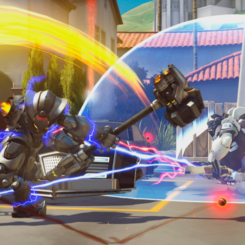

Referências
Nós da Overwatch Store separamos também conteúdo relacionado ao jogo que achamos que você vai gostar. Veja mais abaixo:
Overwatch League

A Overwatch League é uma liga de criada pela Blizzard Entertainment para a competição profissional de Overwatch. Foi anunciada em 4 de novembro de 2016 na BlizzCon 2016. Se você gosta de e-sports, com certeza vai gostar da OWL! Por isso, não deixe de assistir à quarta temporada da Overwatch League! Você ainda ganha 5 tokens a cada 1 hora de partidas assistidas!
Veja maisDicas de Jogabilidade
Se você está aprendendo a jogar ou quer melhorar suas habilidades, esse conteúdo aqui é especial para você! Separamos um dos melhores canais de Overwatch com as melhores dicas para você aperfeiçoar as suas skills e conhecer novos truques e estratégias de cada herói e mapa do jogo.
Veja maisOverwatch Lofi

Quer uma trilha sonora perfeita para jogar Overwatch ou até mesmo para estudar? Desfrute da seleção lofiLo-fi (atualmente conhecido como lo-fi hip hop) é um estilo de produção musical que usa técnicas de gravação de baixa fidelidade (low fidelity) criada pela Overwatch League!
Veja maisTracer - London Calling

Para os amantes do lore de Overwatch, o quadrinho "Tracer - London Calling", escrito por Mariko Tamari, foca na história da personagem Tracer após o fim da organização Overwatch.
Veja mais